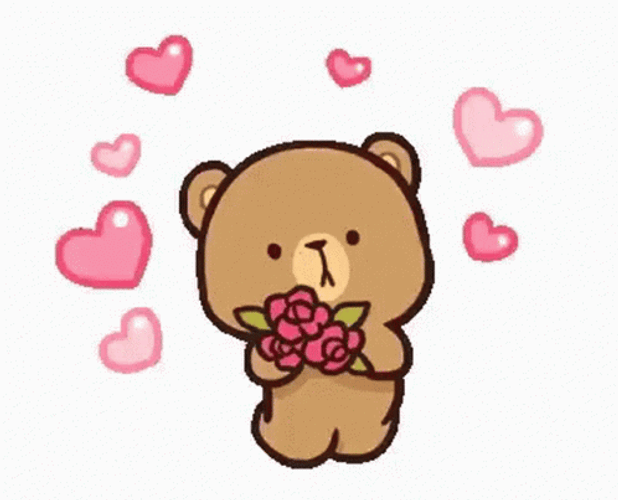
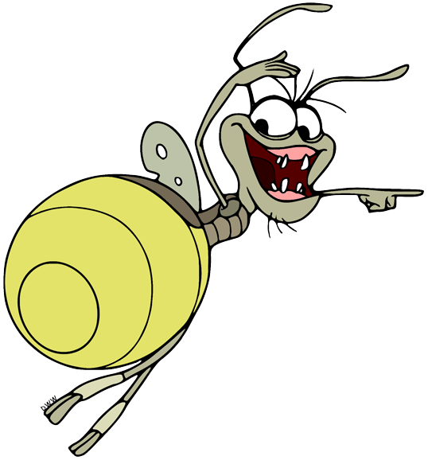
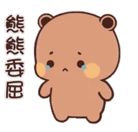
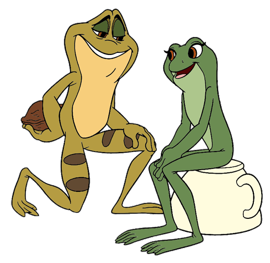
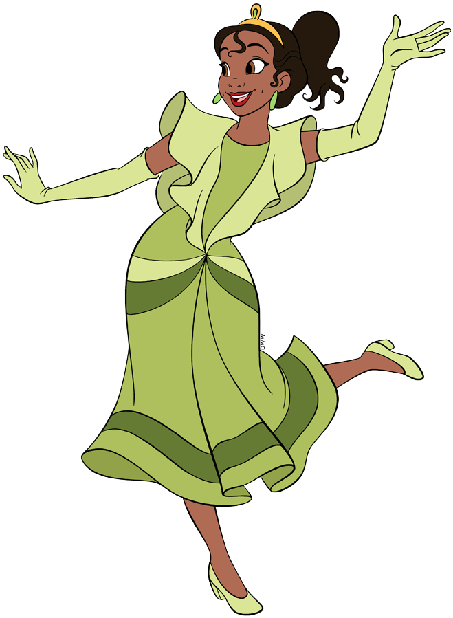

ARTHUR & MIRELLA · UM CONTO SÓ NOSSO

Amor, você me ama muito?
Hoje, amanhã e em todos os capítulos do nosso conto.
UM DRAMINHA DE URSINHO
Como assim, “não”?
Até o ursinho fez biquinho! É só uma brincadeira, minha princesa.
Eu te amo muito,
meu amor!
Juntos, a gente escreve o nosso para sempre.
Pergunta 1 de 15
NOSSO CORAÇÃO DE PONTOS
0 / 15pontos conquistados
Preparando nossa história...


Só um instantinho…
Poxa, eu preparei essas perguntinhas com tanto carinho… vou ficar tristinho se você pular. 🥺

